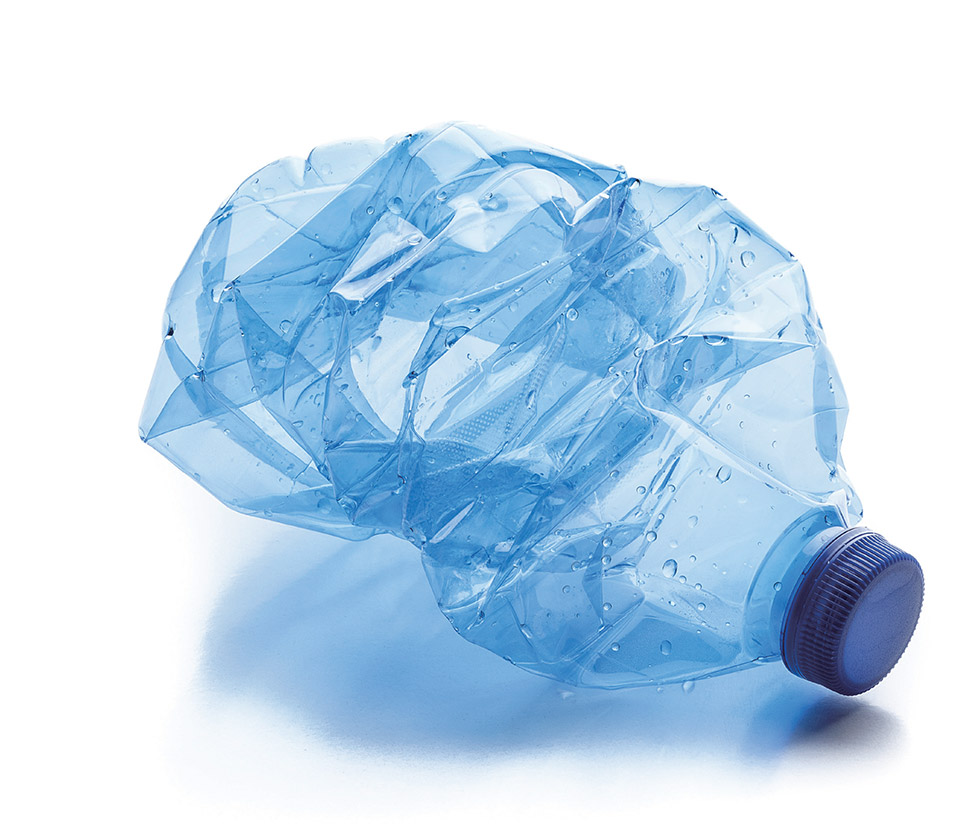

플라스틱 분리수거 안내

플라스틱 PLASTIC
#플라스틱병 #플라스틱팩
재활용: 가능
악취: 없음
분리배출 방법
- 플라스틱 쓰레기는 사용한 후 깨끗이 헹군 후 플라스틱으로 분리배출해주세요.
- 물기가 많은 경우에는 완전히 말려서 배출하고, 이물질이 묻은 경우에는 제거 후 배출해야 합니다.
유의할 점
- 플라스틱은 재활용이 가능한 소중한 자원입니다. 재활용을 위해 플라스틱 쓰레기를 잘 분리배출해주세요.
- 플라스틱 쓰레기는 재활용 가능한 재료이지만 오염되면 재활용이 어려워지므로 사용 후 깨끗이 세척하여 분리수거해야 합니다.
- 플라스틱 팩은 물기가 많은 경우가 많으므로 완전히 말려서 배출해야 합니다.
- 패트병 같은 경우 비닐라벨을 반드시 제거 해야 합니다.